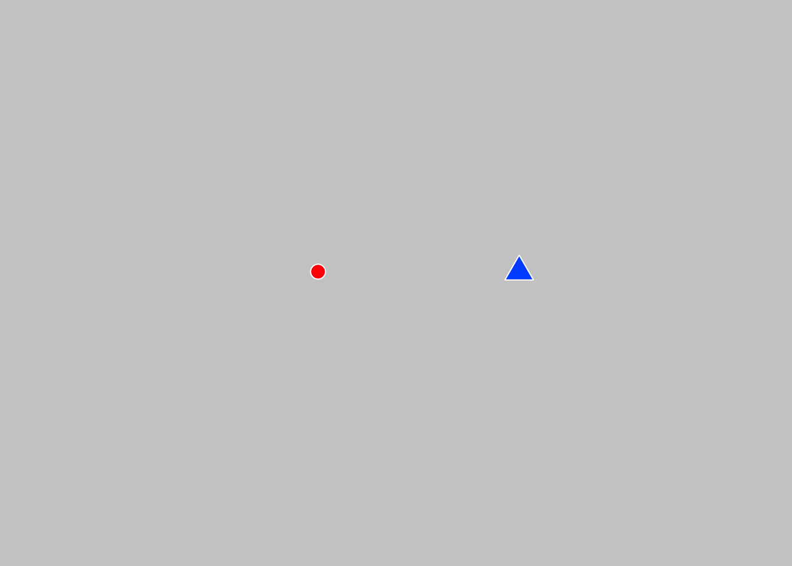
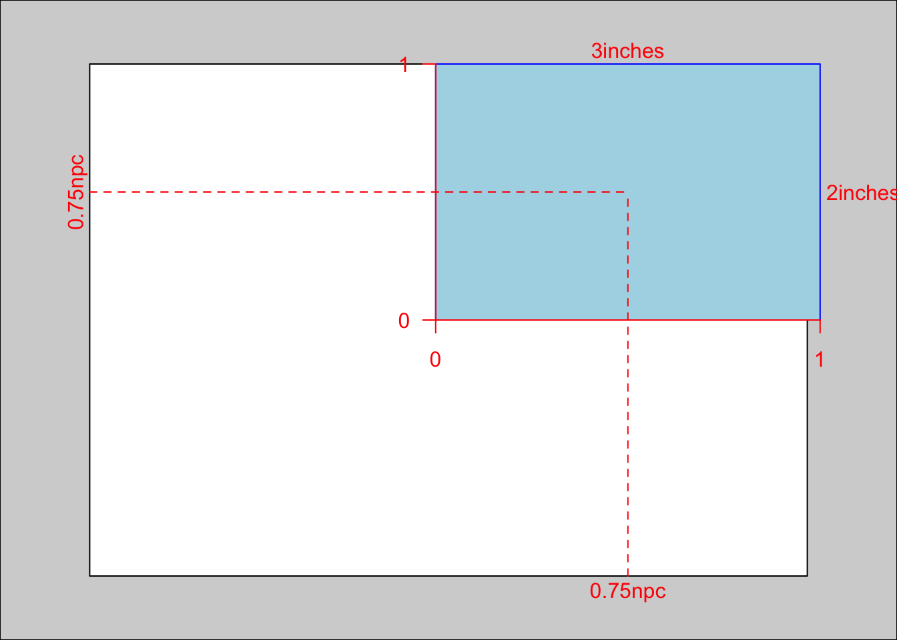
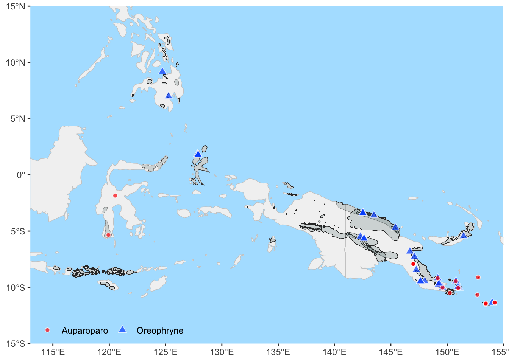
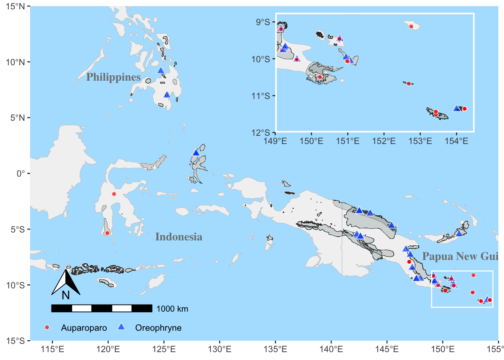
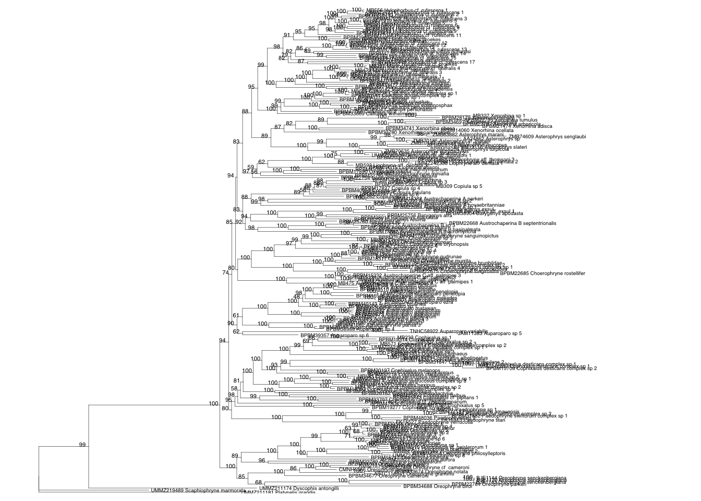
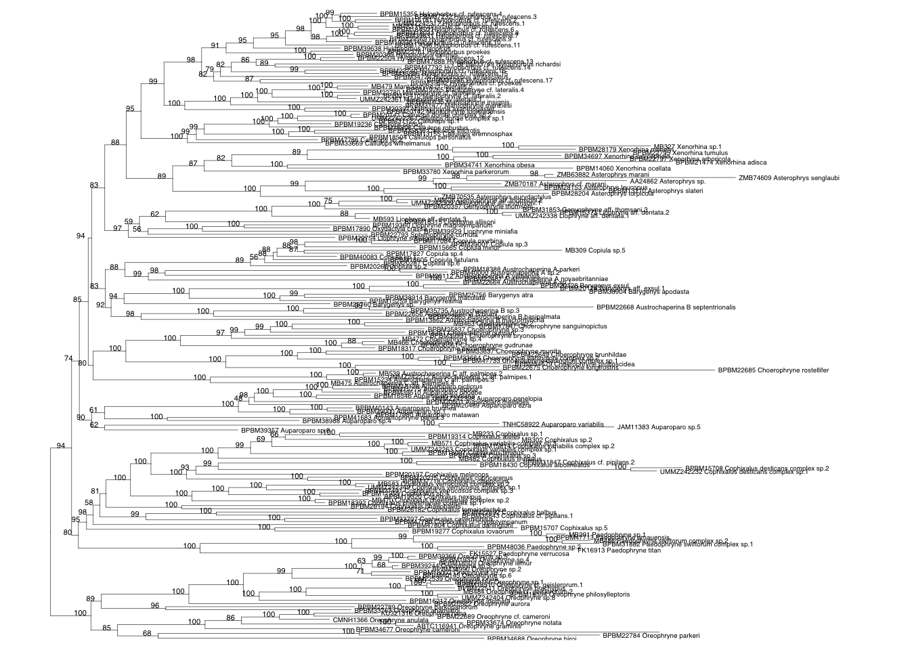
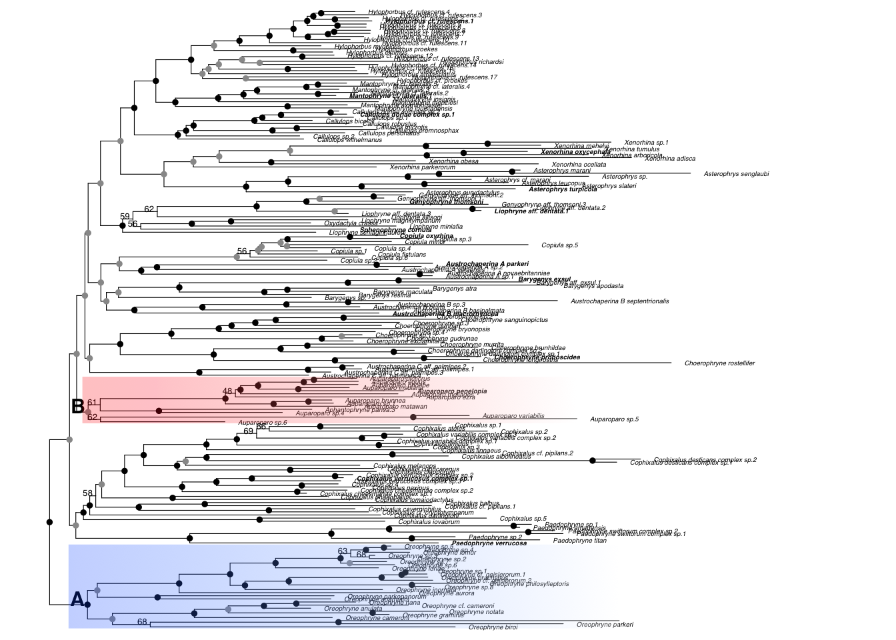

library(dplyr)
library(ggplot2)
library(sf)
library(grid)
library(rnaturalearth)
library(ggspatial)An explanation of the code used for the Auparoparo Oreophryne taxonomy manuscript
Acknowledgements
Many thanks to David Wachsmuth for his beautiful blog post that explains spatial data so well, along with how to make beautiful inset maps using sf, ggplot2, and cowplot. I ended up using gridʻs viewport, but cowplot is great too.
Note
This was an interesting experiment for me trying quarto for both integrating the code with documentation and writing the manuscript versus R plus LaTeX. The integration of the former is great, and helps with organization, but Iʻm sure that Iʻm happy with the loss of fine control that LaTeX offers. Also some of the .docx glitches drive me crazy - if what you saw in .html was what you got in .pdf and .docx, that might make it more worthwhile for me. Maybe Iʻll use quarto for code documentation and go back to LaTeX for the manuscript and tables?
The code in this repository produces the figures (map and phylogeny) and tables in our manuscript.
The map provides the complete range for all known Oreophryne sensu lato species, covering Papua New Guinea, Indonesia, and the Philippines.
The phylogeny shows where the clades Auparoparo and Oreophryne fall within the subfamily Asterophryinae, along with support values at the nodes.
All scripts should be run starting from the Code directory.
MAP (Figure 3)
Setup for the mapping
The mapping script is in maps.R. Load the needed packages. dplyr is for data manipulation, ggplot2 and grid are for plotting, and the remaining are map packages. The sf package is for mapping sf shape data, ggspatial adds annotations, and rnaturalearth provides the map data for countries.
sf data refers to “simple features” data format, which is a standard for storing spatial data (i.e., representations of maps) together with non-spatial data (metadata). Read more about that here.
Load IUCN redlist data, our metadata, save as sf
The IUCN redlist contains known ranges for species. We downloaded all Oreophryne sensu lato data as shape files. We had to download the entire subfamily (Asterophryinae), which is quite a large shapefile, covert to dataframe, filter by genus, and convert back to shapefile. The filtered dataset is what we save for this repository, saved as oreophryne_sensu_lato.rds.
# code shown but not run
# shapedat <-
# read_sf("../Data/Raw_data/redlist_species_data/data_0.shp") #file >100MB
# sd <- shapedat %>% as_tibble %>% as.data.frame
# write.csv(sd[1:8], "IUCNdat.csv")
# ii <- grep("Oreophryne", sd$SCI_NAME)
# oreo_sf <- shapedat[ii,] # all Oreophryne sensu lato shape data
# write_rds(oreo_sf, "../Data/Processed_data/oreophryne_sensu_lato.rds")
oreo_sf <- readRDS("../Data/Processed_data/oreophryne_sensu_lato.rds") # contains sf_oreoRead in the metadata (a spreadsheet), some light filtering, and save as an _sf dataset.
d <- read.csv("../Data/Raw_data/metadata.csv") # tree metadata spreadsheet
metadata <- d %>% mutate(genus = replace(genus,
genus=="Aphantophryne", "Auparoparo")) %>%
filter (genus=="Oreophryne"|
genus=="Auparoparo")
metadata_sf <- st_as_sf(metadata, coords=c("longitude", "latitude"))Point aesthetics
Choosing the colors and shapes for the points. (I left in a color palette that I found from a wonderful blog post because itʻs pretty.)
# specifications for point plots used later
gc <- read.csv("../Data/gencolorABC.csv") # color codes by genus
gfill <- gc$col
names(gfill) <- gc$gen # point-fill colors by genus (value, key)
gfill <- gfill[c("Auparoparo", "Oreophryne")] # keep only these two
gfill["Auparoparo"] = "#FF0000" # change value to red
scales::show_col(c( "#FF0000", # Auparoparo
"#0059FF", # Oreophryne
"#9DBF9E",
"#A84268",
"#FCB97D",
"#C0BCB5",
"#4A6C6F",
"#FF5E5B"
))
gshape <- c("Auparoparo" = 21, # point shapes, filled circle
"Oreophryne" = 24) # filled triange
gsize <- c("Auparoparo" = 1.75, # point sizes
"Oreophryne" = 2.5)
# show points
par(bg= "grey80")
plot(x=0:(length(gshape)+1),
y=rep(1, length(gshape)+2),
type = "n",
axes = F,
xlab = "",
ylab = "")
points( x=1:length(gshape),
y=rep(1, length(gshape)),
pch = gshape,
col ="white",
bg = gfill,
cex = gsize) 
Define the viewport for the inset
The x and y limits for the map in Latitude and Longitude are set here. We will be zooming in with an inset with the limits specified here.
We use the viewport() function from package grid to define a picture-in-picture region where a second plot can be plotted into. x and y specify the location of the viewport on the basemap (between 0 and 1).
mapxlim = c(113, 155) # map limits, x and y
mapylim= c(-15,15)
insetxlim = c(149, 154.5) # inset area
insetylim = c(-12, -8.75)
vp <- viewport( x=0.75,
y=0.75,
width=unit(3, "inches"),
height=unit(2,"inches"))
grid.show.viewport(vp)
Creating the basemap
We get the basemap from the rnaturalearth package, by specifying the country names and then zeroing in on the region of interest by specifying the latitude and longitude limits of the map.
We set the water color to a pleasing light blue, and choose a light grey for the species range data so that it will have a good contrast with the white area (lacking Oreophryne species, as far as we know), and the points that represent our specimens on the map.
The function make_basemap() maps the correct region of the earth, sets our color scheme, and overlays the species distribution data as grey polygons.
Note that the function is pipeable with the map data piped into the function. This is specified by placing a “.” in front of the map data “.map”. All of the map functions will follow this convention so that we can pass the map data and string the functions together.
map_sf <- ne_countries(country =
c(
"Papua New Guinea",
"Indonesia",
"Philippines"
),
scale=50,
returnclass="sf")
watercolor <- "lightskyblue1"
## make_basemap() is a function to plot the basemap (countries and map limits)
## and the distribution data from IUCN redlist as grey polygons
make_basemap <- function( .map = map_sf, # basemap sf data
redlist_sf = oreo_sf, # iucn redlist range sf
redlist_alpha=.2, # grey transparency
xlim = c(113, 155), # map limits, x and y
ylim = c(-15,15)
) {
ggplot() +
geom_sf( data=.map, # base map
color = "grey80",
fill = "#f2f2f2",
linewidth = 0.25
) +
geom_sf(data=redlist_sf, # IUCN redlist data Oreophryne sensu lato
color = "grey20",
fill = "#4A6C6F",
linewidth = .1,
alpha=redlist_alpha) +
coord_sf(xlim = xlim, ylim = ylim, expand=F) #expand=F prevents ggplot from expanding slightly beyond the limits
}
map_sf %>% make_basemap()
Overlaying points on the basemap
The grouping variable to indicate point aesthetics is genus from the metadata, along with the longitude and latitude for each point. The specific values for shape, fill, and size are mapped by the scales_..._manual in geom_point (we chose these values earlier).
The map_points() function adds the points and a legend to the map. We specify the placement of the legend in the lower left corner of the map.
## map_points() adds points for specimens on the basemap
map_points <- function( .map,
dat = metadata, # expects columns: longitude, latitude, genus
legend_pos = "inside",
legend_coord = c(0.165, 0.04),
legend_dir = "horizontal",
pgfill = gfill, # point fill, shape, size
pgshape = gshape,
pgsize = gsize
) {
.map +
geom_point(data=dat,
aes(x=longitude,
y=latitude,
fill=genus,
shape=genus,
size=genus),
color="white",
alpha=.7) +
scale_fill_manual(values = pgfill ) +
scale_shape_manual(values = pgshape ) +
scale_size_manual(values = pgsize ) +
labs(color = "", fill="", shape="", size="") +
theme( axis.title = element_blank(),
panel.grid.major = element_blank(),
panel.background = element_rect(
fill = watercolor,
colour = NA),
legend.background = element_rect(fill = NA),
legend.position = legend_pos,
legend.position.inside = legend_coord,
legend.direction = legend_dir
)
}
map_sf %>%
make_basemap() %>%
map_points()Ignoring unknown labels:
• colour : ""
Annotate the map
We can easily add a scale bar and north arrow using these handy functions from ggspatial.
The second function, zoom_box(), draws a rectangle around the region we will zoom in on for the inset.
## annotate_map() adds the scale bar, north arrow, and zoom rectangle
annotate_map <- function( .map,
mapsf = map_sf # contains names of countries
) {
.map +
geom_sf_text(data=mapsf,
aes(label=name_en),
size = 4,
fontface = "bold",
family = "serif",
color = "grey50",
nudge_x = c(-4.75,8,13),
nudge_y = c(1,-.75, -5.75)) +
#Add scale bar to bottom left from ggspatial
annotation_scale(location = "bl",
height = unit(.25, "cm"),
pad_x = unit(0.3, "in"),
pad_y = unit(0.4, "in")) +
#Add north arrow to bottom left from ggspatial
annotation_north_arrow(height = unit(1, "cm"),
width = unit(1, "cm"),
which_north = "true",
location = "bl",
pad_x = unit(0.3, "in"),
pad_y = unit(0.6, "in")
)
}
## zoom_box() adds the rectangle around the zoom-in area
zoom_box <- function( .map,
box_xlim=c(149,154.5), # box around zoomed in area
box_ylim=c(-12,-8.75),
...
) {
# Add white rectangle around zoom-in area
.map +
annotate( geom="rect",
xmin = box_xlim[1],
xmax = box_xlim[2],
ymin = box_ylim[1],
ymax = box_ylim[2],
color = "white",
fill = NA,
...
)
}We can then easily create the basemap starting from the map_sf shapefile and piping the functions together. We save this object to write to file later.
basemap <- map_sf %>%
make_basemap() %>%
map_points() %>%
annotate_map() %>%
zoom_box()
print(basemap)
Inset map
Making the inset map is then just a matter of reusing the functions to plot the same map with smaller map limits. We also tweak some of the options to make it look pretty, such as dropping the legend, integer y-limits, thicker white zoom box line, and smaller expansion around the map area.
insetxlim = c(149, 154.5)
insetylim = c(-12, -8.75)
ybreaks <- -12:-9
inset_dat <- filter(metadata,
latitude > insetylim[1] &
latitude < insetylim[2] &
longitude > insetxlim[1] &
longitude < insetxlim[2]
)
insetmap <- map_sf %>%
make_basemap( xlim=insetxlim, ylim=insetylim) %>%
map_points( dat=inset_dat, legend_pos="") %>%
zoom_box(linewidth=1.5) +
scale_y_continuous(breaks = ybreaks) + # pretty y-breaks for inset
theme( plot.background = element_rect( # set margin area to watercolor
fill = watercolor,
color = NA)
)
print(insetmap)
Putting the map together
The basemap and the inset map are now two map objects, so all we have to do is print the basemap first and the inset over it, while specifying to plot it in the viewport.
print(basemap)
print(insetmap, vp = viewport(0.72, 0.78,
width = 0.55, height = 0.4)) 
Write map to file
The final map is written to the Results directory as fig3.map-dot.pdf or .png.
## print the basemap with the inset map in viewport
filepath="../Products/Manuscript/Figures/fig3.map-dot"
height=6
width=9
pdf(file=paste0(filepath, ".pdf"), height=height, width=width)
print(basemap)
print(insetmap, vp = viewport(0.72, 0.78, width = 0.55, height = 0.4))
dev.off()quartz_off_screen
2 png(file=paste0(filepath, ".png"), height=height, width=width, units="in", res=300)
print(basemap)
print(insetmap, vp = viewport(0.72, 0.78, width = 0.55, height = 0.4))
dev.off()quartz_off_screen
2 PHYLOGENY (Figure 2)
Setup
The phylogeny plotting script is in oreophylogeny.R. Load the needed packages. Additional packages used include treeio is for tree input and ouptut, tidytree and ggtree is for tree manipulation and plotting.
See Guangchuang Yuʻs excellent book explaining his packages Data Integration, Manipulation and Visualization of Phylogenetic Trees by https://yulab-smu.top/treedata-book/index.html
# If you need ggtree, treeio use BiocManager
# if (!requireNamespace("BiocManager", quietly = TRUE))
# install.packages("BiocManager")
# BiocManager::install("ggtree")
# BiocManager::install("treeio")
library(tidytree)
library(treeio)
library(ggtree)
library(dplyr)
library(ggplot2)Load my personal helper functions
source("clean_functions.R") # contains no_()
source("plotting_functions.R") Read in the files from the Data directory (in subdirectories as indicated) – the tree file, the metadata, genus type species genus_references.csv, and color codes.
iqtree <- read.iqtree("../Data/IQTree/model_search/senkenbergiana_merge.treefile")
# if you change the input treefile, run clean_metadata.R with the new treefile
d <- read.csv("../Data/Raw_data/metadata.csv") # tree metadata spreadsheet
references <- read.csv("../Data/genus_references.csv") # genus reference taxa
references$id <- gsub("_(.*)","", references)
gc <- read.csv("../Data/gencolorABC.csv") # color codes by genus
gcol <- gc$col
names(gcol) <- gc$gen # gcol holds the colors for the genera (value, key) Plot the full tree
The full tree is quite large and plotted to the Products/Validation_Figures directory so that we can check the data to make sure everything read in correctly.
We use create a ggtree object and add tip labels and adjust line thickneses
p <- ggtree(iqtree, size=.1) %<+% d + # add annotation dataframe
geom_tiplab(aes(label=no_(label)), size=1.3) +
geom_text2(aes(subset = (!isTip), label=label),
size=1.5,
nudge_x=-.007,
nudge_y=1) +
ggplot2::xlim(0, 0.7)
p
print_output("../Products/Validation_Figures/FullIQTree", p) quartz_off_screen
2 Remove duplicate represenatatives of each species
To improve readability, we drop some duplicate tips so that there is only one per species.
We grab the species names from the tree, and use the distinct function by species name to get a list of tips to drop (and those to keep). Then use the drop.tip function to remove duplicates and the outgroup species, and plot the trimmed tree for checking.
### 3. Trim tree down to 1 sample per species (204 sp tree)
tree <- full_join(iqtree, d, by="label") # full tree with metadata 235 taxa
## full_join(iqtree, d, by="label") %>% as_tibble %>% as.data.frame # check merge
tibb <- as_tibble(tree) %>% cutnoderows # a tree tibble, tip rows only 235
ss <- tibb %>% # 207 taxa
arrange (desc(id %in% references$id)) %>% # move references to top
distinct(across(gensp), .keep_all=TRUE) %>% as.data.frame # drop duplicates
todrop <- tibb$label %w/o% ss$label # drop 32 taxa at multiple sites, outgroups
todropid <- sub("[_-].*$", "", todrop)
write.csv(data.frame("drops"=c(todrop, d$label[d$outgroup])), file="dropped_taxa_tips_fulliqtree.csv", row.names=F)
dtree207og <- treeio::drop.tip(tree, todrop) # tree with only one sample per species - 203 tips.
dtree204 <- treeio::drop.tip(tree, c(todrop, d$label[d$outgroup])) # ingroup tree with only one sample per species - 200 tips.
keepids <- c("moluccensis") # leave in all senkenbergiana
todrop <- grep(paste(keepids, collapse="|"), todrop, invert=T, value=T ) # drop 30 taxa
dtree215og <- treeio::drop.tip(tree, todrop) # outgroup tree with all new samples, only one of others - 205 tips.
dtree212 <- treeio::drop.tip(tree, c(todrop, d$label[d$outgroup])) # ingroup tree as above - 202 tips.
# Print trimmed iqtree 204 spp
p <- ggtree(dtree204, size=.1) +
geom_tiplab(aes(label=label_clean), size=1.3) +
geom_text2(aes(subset = (!isTip), label=label),
size=1.5,
nudge_x=-.005,
nudge_y=1) +
ggplot2::xlim(0, 0.38)
p
print_output("../Products/Validation_Figures/TrimmedIQTree", p) quartz_off_screen
2 Final, pretty tree
Now we are ready to plot the final, pretty tree with Auparoparo and Oreophryne highlighted. First, we identify the node of the Most Recent Common Ancestor (MRCA) for each of these clades, using the get_MRCA function on the tip names, and associate the labels with the nodes.
We can then create a ggtree and attatch the MRCA_labels data to the ggtree object which is used to annotate the node label (letter “A” or “B”) for the MRCA nodes (the tree can be thought of as a spreadsheet with one row per node, and the MRCA_label data is just added as an additional column).
IQTREE provides the boostrap support values for each node, and we convert these to color coded dots to indicate bootstrap support using hte geom_point2 function,
We use geom_text2 function to add the MRCA_labels “A” and “B” on the respective nodes, and we can add the gradient on these clades when we print the final tree using the very nifty function gradient_tree together with the print_output function.
## Figure 2 - support with clades highlighted
dtree <- dtree212 # all new samples, no outgroups, one of other taxa
mrcas <- sapply( c("Oreophryne", "Auparoparo"), function(x) get_MRCA( ggtree(dtree), x))
MRCA_labels <- data.frame(node=mrcas, MRCA_label=names(mrcas), letter=c("A", "B"))
p_support <- ggtree(dtree, size=.2) %<+% MRCA_labels +
geom_tiplab(aes(label=gensp,
# color=tdat$tipcol,
fontface=fontface),
size=1.3,
offset=.005 ) +
geom_point2(aes(subset=(!isTip & as.numeric(label)>=95 )), size=1, color="black") +
geom_point2(aes(subset=(!isTip & as.numeric(label)>=70 & as.numeric(label)<95 )), color="grey60", size=1) +
geom_text2(aes(subset = (!isTip & as.numeric(label)<70), label=label),
size=1.75,
color="black",
nudge_x=-.004,
nudge_y=1) +
geom_text2(aes(subset = !is.na(MRCA_label), label=letter),
size=4,
color="black",
nudge_x=-.005,
nudge_y=2,
fontface='bold') +
theme_tree(legend.position="none") +
ggplot2::xlim(0, 0.4)
gradient_tree(p_support)
print_output("../Products/Validation_Figures/FullTree_support", p_support) quartz_off_screen
2 print_output("../Products/Manuscript/Figures/fig2.FullTree_support_highlight", gradient_tree(p_support)) quartz_off_screen
2 TABLES
Letʻs face it, tables are a pain. We used the flextable package to make tables with tailored formatting for this manuscript, output to both quartoʻs native .html format which was great for collaborating, and to .docx format required for journal submission.
flextable is very cool, and quarto integration is great, but I found at times that I missed the fine control that LaTeX allows.
The inputs are in ../Data/Raw_data/ and the outputs are saved to ../Data/Processed_data/ if they are to be accessed by other code or markdown files, and to ../Products/Manuscript/Tables/ if they are final products for the manuscript.
Setup
Load the packages
Make sure you have these packages installed.
library(tidyverse)── Attaching core tidyverse packages ──────────────────────── tidyverse 2.0.0 ──
✔ forcats 1.0.1 ✔ stringr 1.6.0
✔ lubridate 1.9.5 ✔ tibble 3.3.1
✔ purrr 1.2.2 ✔ tidyr 1.3.2
✔ readr 2.2.0
── Conflicts ────────────────────────────────────────── tidyverse_conflicts() ──
✖ tidyr::expand() masks ggtree::expand()
✖ tidytree::filter() masks dplyr::filter(), stats::filter()
✖ dplyr::lag() masks stats::lag()
ℹ Use the conflicted package (<http://conflicted.r-lib.org/>) to force all conflicts to become errorslibrary(flextable)
Attaching package: 'flextable'
The following object is masked from 'package:purrr':
compose
The following object is masked from 'package:ggtree':
rotatelibrary(officer)
library(dplyr)
library(stringr)Standardize the look of the tables
These useful functions store the settings that can be applied for each table just by calling the function.
set_flextable_defaults(
theme_fun = theme_booktabs,
big.mark = " ",
font.color = "#666666",
border.color = "#666666",
padding = 2,
)
landscape_properties <- prop_section(
page_size = page_size(
orient = "landscape",
width = 8.3, height = 11.7
),
type = "continuous",
page_margins = page_mar()
)
portrait_properties <- prop_section(
page_size = page_size(
orient = "portrait",
width = 8.5, height = 11
),
type = "continuous",
page_margins = page_mar()
)
# Function to add table captions for docx
addcap <- function(.flextable, table_caption) {
newtable <- .flextable |>
add_header_lines(values = table_caption) |>
bold(part = "header", i = 1) |>
align(part = "header", i = c(1:length(table_caption)), align = "left") |>
border(part = "head", i = c(1:length(table_caption)),
border = list("width" = 0, color = "black", style = "solid")) |>
border(part = "head", i = length(table_caption),
border.bottom = list("width" = 1, color = "black", style = "solid"))
return(newtable)
}Locality table (Table 1)
Read in the raw data, and specify the column headers, caption, and formatting. Save table in .docx format and an R data object in case we want to use it again later in code or markdown.
dat <- read.csv("../Data/Raw_data/locality.csv")
lt <- dat |>
flextable() |>
separate_header() |>
italic(part="body", j=c("Species")) |>
autofit() |>
set_header_labels(LatLon = "Latitude, Longitude")
table_caption = c("Table 1.", "Locality information and GenBank sccession numbers for samples sequenced in this study. See Table 1 in Hill, et al., 2023 for additional metadata.")
doclt <- lt |>
fontsize(size = 10, part = "all") |>
addcap(table_caption) |>
width(j=1:9, width=c(0.9, 1.9, 2.4, .9, 0.9, 0.9, 0.9, 0.9, 0.9))
docltTable 1. | ||||||||
|---|---|---|---|---|---|---|---|---|
Locality information and GenBank sccession numbers for samples sequenced in this study. See Table 1 in Hill, et al., 2023 for additional metadata. | ||||||||
ID | Species | Locality | Latitude, Longitude | SIA | BDNF | NXC1 | CYTB | ND4 |
BJE01120 | Oreophryne moluccensis | Kabupaten Halmahera Utara, | 1.8228, 127.8300 | PV703775 | PV703761 | PV703771 | PV703765 | PV703768 |
BJE01143 | Oreophryne moluccensis | Kabupaten Halmahera Utara, | 1.7899, 127.8910 | PV703776 | PV703762 | PV703772 | PV703766 | PV703769 |
BJE01144 | Oreophryne moluccensis | Kabupaten Halmahera Utara, | 1.7899, 127.8910 | PV703777 | PV703763 | PV703773 | PV703767 | PV703770 |
save_as_docx(
doclt,
path = "../Products/Manuscript/Tables/table1.localities.docx",
pr_section = landscape_properties
)
saveRDS(lt, file="../Data/Processed_data/localities.RDS")Character State Definitions (Table 2)
Table explaining the characters that were analyzed and how they are defined. The table is set up similarly, but this table has a footer.
dat <- read.csv("../Data/Raw_data/character_key.csv")
dat$Column <- c(1:10, "", "", "")
dat <- dat[c("Column", "Trait", "Definition")]
kt <- dat |>
flextable() |>
separate_header() |>
autofit() |>
add_footer_lines("*Corresponding column in Table 3. The last three traits were scored and are invariable across species, thus not tabluated in Table 3.") |>
set_header_labels(Column = "Column*")
table_caption = c("Table 2.", "Description of traits surveyed. ")
dockt <- kt |>
addcap(table_caption) |>
width(j=1:3, width=c(0.79, 1.51, 4.23))
docktTable 2. | ||
|---|---|---|
Description of traits surveyed. | ||
Column* | Trait | Definition |
1 | Procoracoids | Size and shape of the procoracoid cartilages, CR= curved, reduced |
2 | Clavicles | Size and shape of the clavicles, CR= curved, reduced |
3 | Omasternum | Presence (+) or absence (-) of the omasternum |
4 | Sternum | Cartilaginous sternum or sternal plate |
5 | Call type | Qualitative description of the call type |
6 | Finger:toe width | The ratio of finger pad width to toe pad width |
7 | Pectoral ligament | Cartilaginous or ligamentous connection between scapula and procoracoid |
8 | Rel toe length | Relative length of 5th toe compared to length of 3rd toe (5<3, 5=3, 5>3) |
9 | Toe webbing | Toe webbing assessed on 5th toe (absent (-), basally webbed, well webbed) |
10 | Tympanum:eye diameter | Tympanum diameter relative to eye diameter (¼, ⅓, or ½) |
Pupil horizontal | Whether the pupil is horizontal | |
Teeth | Whether teeth are present | |
Palatal folds | Whether two horizontal palatal folds in front of the pharynx are present | |
*Corresponding column in Table 3. The last three traits were scored and are invariable across species, thus not tabluated in Table 3. | ||
save_as_docx(
dockt,
path = "../Products/Manuscript/Tables/table2.characterkey.docx",
pr_section = portrait_properties
)
saveRDS(kt, file="../Data/Processed_data/character_key.RDS")Character Matrix (Table 3)
The table reporting the character values for each species assessed. This table involves more filtering and formatting to fit on a page. This table also includes footnotes in particular cells/headers.
dat <- read.csv("../Data/Raw_data/character_matrix.csv")
dat$pectoral.connector <- trimws(dat$pectoral.connector)
not_examined <- dat$not_examined
genus <- dat$genus
dat <- dat[c("genus", "species", "procoracoid.cartilage", "clavicles", "omosternum", "sternum", "call.type", "finger.toe.width", "pectoral.connector", "toe.length", "toe.webbing", "tympanum.eye.diameter", "character_data_reference")]
dat <- dat |>
mutate( procoracoid.cartilage = "CR") |>
mutate( clavicles="CR") |>
mutate( omosternum ="\u2013") |>
mutate( sternum = ifelse( sternum=="cartilaginous", "cart", sternum)) |>
mutate( pectoral.connector =
case_when( pectoral.connector=="cartilaginous" ~ "cart",
pectoral.connector=="ligamentous" ~ "lig",
TRUE ~ ""
)
)|>
mutate( call.type =
case_when( call.type=="peeping" ~ "peep",
call.type=="chattering" ~ "chatter",
TRUE ~ call.type
)
)|>
mutate( toe.webbing = ifelse( toe.webbing=="none",
"\u2013",
toe.webbing
)
)
names(dat) <- c("Genus", "species", "proc", "clav", "omo", "ster", "call type", "fing: toe width", "pec lig", "rel toe len", "toe web", "tymp:eye diam", "character data reference")
mt <- dat |>
flextable() |>
separate_header() |>
autofit() |>
add_header_row( values = c("", "", "(1)", "(2)", "(3)", "(4)", "(5)", "(6)", "(7)", "(8)", "(9)", "(10)", "(11)")) |>
theme_booktabs(bold_header = TRUE) |>
merge_v(j = 1) |>
valign(j = 1, valign = "top") |>
italic(part="body", j=c("Genus", "species")) |>
hline(i=c(18, 28), part="body") |>
footnote(i = not_examined,
j = 2,
part = "body",
ref_symbols = c("1"),
value = as_paragraph(
c("Character states obtained from the literature, specimens not available for examination in this study.")
)
) |>
footnote(i = 19,
j = 1,
part = "body",
ref_symbols = c("2"),
value = as_paragraph(
"Hill et al. 2022 places ", as_i("Aphantophryne pansa"), " within ", as_i("Auparoparo"), ", but the status of ", as_i("Aphantophryne"), " requires further study with samples from additional species and localities."
)
) |>
add_footer_lines("*External characters were examined from specimens, internal characters and pupil shape taken from the literature.")
table_caption = c("Table 3.", "Morphological character matrix. Columns: (1) Procoracoids and (2) Clavicles CR= curved reduced, (3) Omasternum , (4) Sternum, (5) Call Type, (6) Finger to Toe Ratio, (7) Pectoral Connector Type, (8) Relative Toe Length of the fifth to third toe, (9) Toe Webbing, (10) Typanum to Eye Diameter Ratio, (11) Reference. See Table 2 for character states. Three traits are invariable across all species and not tabulated: presence of two palatal folds, a horizontal pupil, and lack of vomerine teeth (Boettger 1895, VanKampen 1923, Parker 1934).")
docmt <- mt |>
addcap(table_caption) |>
width(j=1:13, width=c(1.03, 1.42, .56, .53, .58, .52, .67, .67, .53, .55, .74, .64, 1.21))
docmtTable 3. | ||||||||||||
|---|---|---|---|---|---|---|---|---|---|---|---|---|
Morphological character matrix. Columns: (1) Procoracoids and (2) Clavicles CR= curved reduced, (3) Omasternum , (4) Sternum, (5) Call Type, (6) Finger to Toe Ratio, (7) Pectoral Connector Type, (8) Relative Toe Length of the fifth to third toe, (9) Toe Webbing, (10) Typanum to Eye Diameter Ratio, (11) Reference. See Table 2 for character states. Three traits are invariable across all species and not tabulated: presence of two palatal folds, a horizontal pupil, and lack of vomerine teeth (Boettger 1895, VanKampen 1923, Parker 1934). | ||||||||||||
(1) | (2) | (3) | (4) | (5) | (6) | (7) | (8) | (9) | (10) | (11) | ||
Genus | species | proc | clav | omo | ster | call type | fing: toe width | pec lig | rel toe len | toe web | tymp:eye diam | character data reference |
Oreophryne | anamiatoi | CR | CR | – | cart | chuckle or cackle | 1.2 | cart | 5>3 | – | 1/4 | Kraus Allison 2009 |
anulata1 | CR | CR | – | cart | slightly larger | 5>3 | – | 1/2 | Stejneger 1908 | |||
aurora | CR | CR | – | cart | harsh croaks | lig | 5>3 | webbed | 1/4 | Kraus 2016 | ||
biroi | CR | CR | – | cart | rattle | 1.1 | lig | 5=3 | webbed | 1/4 | Zweifel et al. 2003 | |
brachypus | CR | CR | – | cart | long squeak | 1.1 | lig | 5>3 | webbed | 1/4 | Zweifel et al. 2003 | |
cameroni | CR | CR | – | cart | peep | cart | 5>3 | basal | 1/4 | Kraus 2013 | ||
frontifasciata1 | CR | CR | – | cart | slightly larger | cart | 5>3 | basal | 1/2 | Horst 1883, Brongersma 1948 | ||
geislerorum | CR | CR | – | cart | rattle | lig | 5>3 | webbed | 1/3 | Zweifel et al. 2003 | ||
graminis1 | CR | CR | – | cart | peep | approx equal | cart | 5>3 | – | 1/3 | Gunther Richards 2012 | |
inornata | CR | CR | – | cart | honk | 1.0 | lig | 5>3 | basal | 1/4 | Kraus 2016 | |
lemur | CR | CR | – | cart | honk | lig | 5>3 | basal | 1/4 | Kraus 2016 | ||
loriae | CR | CR | – | cart | honk | lig | 5>3 | webbed | 1/3 | Kraus 2016 | ||
moluccensis1 | CR | CR | – | cart | slightly larger | 5=3 | basal | 1/3 | Boettger 1895, Parker 1934 | |||
nana1 | CR | CR | – | cart | approx equal | cart | 5<3 | – | 1/2 | Brown Alcala, 1967 | ||
notata | CR | CR | – | cart | peep | cart | 5>3 | – | 1/4 | Zweifel 2003 | ||
parkeri | CR | CR | – | cart | peep | lig | 5>3 | webbed | 1/3 | Kraus 2013, Zweifel et al. 2003 | ||
parkopanorum | CR | CR | – | cart | cart | 5<3 | – | 1/4 | Kraus 2013 | |||
philosylleptoris | CR | CR | – | cart | honk | 1.0 | lig | 5>3 | webbed | 1/3 | Kraus 2016 | |
Auparoparo2 | brunnea1 | CR | CR | – | cart | rattle | larger | lig | 5=3 | basal | 1/3 | Kraus 2017 |
equus | CR | CR | – | cart | whinny | 1.3 | lig | 5=3 | basal | 1/4 | Kraus 2016 | |
ezra | CR | CR | – | cart | chatter | lig | 5>3 | basal | 1/4 | Kraus Allison 2009 | ||
insulana | CR | CR | – | cart | whinny | lig | 5>3 | basal | 1/4 | Kraus 2016, Zweifel 1956 | ||
matawan | CR | CR | – | cart | rattle | lig | 5≥3 | – | 1/4 | Kraus 2016 | ||
meliades | CR | CR | – | cart | whinny | 1.2 | lig | 5=3 | basal | 1/3 | Kraus 2016 | |
penelopeia | CR | CR | – | cart | whinny | 1.3 | lig | 5>3 | basal | 1/4 | Kraus 2016 | |
phoebe | CR | CR | – | cart | whinny | 1.2 | cart | 5>3 | webbed | 1/4 | Kraus 2017 | |
picticrus | CR | CR | – | cart | whinny | 1.3 | lig | 5>3 | basal | 1/3 | Kraus 2016 | |
variabilis1 | CR | CR | – | cart | much larger | cart | – | >2/3 | Boulenger 1896 | |||
1Character states obtained from the literature, specimens not available for examination in this study. | ||||||||||||
2Hill et al. 2022 places Aphantophryne pansa within Auparoparo, but the status of Aphantophryne requires further study with samples from additional species and localities. | ||||||||||||
*External characters were examined from specimens, internal characters and pupil shape taken from the literature. | ||||||||||||
save_as_docx(
docmt,
path = "../Products/Manuscript/Tables/table3.charactermatrix.docx",
pr_section = landscape_properties
)
saveRDS(mt, file="../Data/Processed_data/character_matrix.RDS")Reference Species (Table 4)
Table of reference species (type species or proxy) for each genus-level clade used in the phylogenetic definition of the clades.
dat <- read.csv("../Data/genus_type.csv")
gt <- flextable(dat, col_keys = c("Genus", "dummy")) |>
separate_header() |>
italic(part="body", j=c("Genus")) |>
mk_par(j = "dummy", value = as_paragraph(as_i(Type.Species), " ", citation)) |>
mk_par(i= dat$syn!="", j = "dummy", value = as_paragraph(as_i(Type.Species), " ", citation, " (=", as_i(syn), syncite, ")")) |>
set_header_labels(Genus = "Genus-level clade", dummy = "Internal Specifier (Type Species or proxy)") |>
autofit() |>
add_footer_lines(values = as_paragraph("*We note that the monophyly of ", as_i("Austrochaperina, Liophryne, Oxydactyla"), ", and ", as_i("Sphenophryne")," (and reciprocal monophyly of ", as_i("Genyophryne")," [", as_i("Genyophryne thomsoni")," Boulenger, 1890] with respect to ",as_i("Liophryne + Oxytactyla + Sphenophryne"),") has not yet been established. ", as_i("Austrochaperina")," is polyphyletic in recent phylogenies with possibly three monophyletic clades that are not sister taxa (Figure 2)."))
#ft <- add_footer_lines(ft, values = as_paragraph(as_i("Your italicized text here")))
table_caption = c("Table 4.", "Genus-level clades of Asterophryinae and their internal specifiers (type species or proxies).")
docgt <- gt |>
addcap(table_caption)
docgtTable 4. | |
|---|---|
Genus-level clades of Asterophryinae and their internal specifiers (type species or proxies). | |
Genus-level clade | Internal Specifier (Type Species or proxy) |
Asterophrys | Asterophrys turpicola (Schlegel 1837) |
Auparoparo | Auparoparo penelopeia (Kraus 2016) |
Austrochaperina* | Austrochaperina palmipes (Zweifel 1956) |
Austrochaperina* | Austrochaperina robusta Fry 1912 |
Barygenys | Barygenys cheesmanae Parker 1936 |
Callulops | Callulops doriae Boulenger 1888 |
Choerophryne | Choerophryne proboscidea Van Kampen 1914 |
Cophixalus | Cophixalus verrucosus (Boulenger, 1898) |
Copiula | Copiula oxyrhina (Boulenger 1898) |
Genyophryne* | Genyophryne thomsoni Boulenger, 1890 |
Hylophorbus | Hylophorbus rufescens Macleay 1878 |
Mantophyrne | Mantophryne lateralis Boulenger 1897 |
Liophryne* | Liophryne rhododactyla (Boulenger 1897) |
Oreophryne | Oreophryne senckenbergiana Boettger 1895 (= O. moluccensis (Peters and Doria 1878)) |
Oxydactyla | Oxydactyla brevicrus (Van Kampen 1913) |
Paedophryne | Paedophryne kathismaphlox Kraus 2010 |
Sphenophryne* | Sphenophryne cornuta Peters and Doria 1878 |
Xenorhina | Xenorhina oxycephala (Schlegel 1858) |
*We note that the monophyly of Austrochaperina, Liophryne, Oxydactyla, and Sphenophryne (and reciprocal monophyly of Genyophryne [Genyophryne thomsoni Boulenger, 1890] with respect to Liophryne + Oxytactyla + Sphenophryne) has not yet been established. Austrochaperina is polyphyletic in recent phylogenies with possibly three monophyletic clades that are not sister taxa (Figure 2). | |
save_as_docx(
docgt,
path = "../Products/Manuscript/Tables/table4.genustypes.docx",
pr_section = portrait_properties
)
saveRDS(gt, file = "../Data/Processed_data/genus_types.RDS")
write.csv(dat, "../Data/Processed_data/genus_types.csv", row.names=F)Taxonomic Transfers (Supplementary table 2)
The taxonomy table, listing all known species of Oreophryne as currently recognized and to which genus it can be assigned. Some filtering (separating words, italics, etc.) and light editing of the data (correcting the gender, etc.).
dat <- read.csv("../Data/Raw_data/Oreophryne_sensu_lato.csv", as.is=T)
names(dat) <- c("orig", "prev", "curr", "sp", "notes")
nwords <- sapply(strsplit(dat$orig, " "), length)
dat$citation <- ifelse( dat$sp!="moluccensis",
word(dat$orig, 3, nwords, sep=" "),
word(dat$orig, 5, nwords, sep=" ")
)
# filtering to separate the information in the original designation to separate data fields
dat <- dat |>
mutate( name = ifelse( dat$sp!="moluccensis",
word(dat$orig, 1,2, sep=" "), # most species
word(dat$orig, 1,4, sep=" ") # type has 4 words
)
) |>
mutate( citation = ifelse( dat$sp!="moluccensis",
word(dat$orig, 3, nwords, sep=" "),
word(dat$orig, 5, nwords, sep=" ")
)
) |>
mutate(curr = if_else (curr=="Incertae sedis", "incertae sedis", curr)) |>
mutate( sp = word(name, -1,-1, sep=" "))
# change of gender to match Genus name
dat$sp[dat$sp == "anulatus"] <- "anulata"
hlinerows <- table(dat$curr)[c("Oreophryne", "Auparoparo", "incertae sedis")]
hlinerows <- c(hlinerows[1], sum(hlinerows[c(1,2)]))
ft <- dat |>
flextable(col_keys = c("name", "citation", "prev", "curr", "sp", "notes")) |>
separate_header() |>
autofit() |>
set_header_labels(
name = "Original designation",
citation = "Citation",
prev = "Previous generic placement",
curr = "Current generic placement",
sp = "Species",
notes = "Notes") |>
hline(i=hlinerows, part="body") |>
# mk_par(j = "orig", value = as_paragraph(as_i(name), " ", auth)) |>
italic(part="body", j=c("name", "prev", "curr", "sp"))
table_caption = c("Table 5.", "Classification of Auparoparo and Oreophryne based on phylogenetic evidence from two mitochondrial gene fragments (CytB, ND4) and three nuclear loci (BDNF, SIA, NXC). Incertae sedis taxa require molecular phylogenetic evidence for assignment.")
docft <- ft |>
addcap(table_caption) |>
width(j=1:6, width=c(2.13, 2, 1.75, 1.2, 1.2, 2))
docftTable 5. | |||||
|---|---|---|---|---|---|
Classification of Auparoparo and Oreophryne based on phylogenetic evidence from two mitochondrial gene fragments (CytB, ND4) and three nuclear loci (BDNF, SIA, NXC). Incertae sedis taxa require molecular phylogenetic evidence for assignment. | |||||
Original designation | Citation | Previous generic placement | Current generic placement | Species | Notes |
Oreophryne anamiatoi | Kraus & Allison, 2009 | Oreophryne | Oreophryne | anamiatoi | Retained in Oreophryne |
Phrynixalus anulatus | Stejneger, 1908 | Oreophryne | Oreophryne | anulata | Retained in Oreophryne |
Oreophryne aurora | Kraus, 2016 | Oreophryne | Oreophryne | aurora | Retained in Oreophryne |
Sphenophryne biroi | Méhely, 1897 | Oreophryne | Oreophryne | biroi | Retained in Oreophryne |
Hylella brachypus | Werner, 1898 | Oreophryne | Oreophryne | brachypus | Retained in Oreophryne |
Oreophryne cameroni | Kraus, 2013 | Oreophryne | Oreophryne | cameroni | Retained in Oreophryne |
Cophixalus geislerorum | Boettger, 1892 | Oreophryne | Oreophryne | geislerorum | Retained in Oreophryne |
Oreophryne graminis | Günther & Richards, 2012 | Oreophryne | Oreophryne | graminis | Retained in Oreophryne |
Oreophryne inornata | Zweifel, 1956 | Oreophryne | Oreophryne | inornata | Retained in Oreophryne |
Oreophryne lemur | Kraus, 2016 | Oreophryne | Oreophryne | lemur | Retained in Oreophryne |
Sphenophryne loriae | Boulenger, 1898 | Oreophryne | Oreophryne | loriae | Retained in Oreophryne |
Microhyla achatina var. moluccensis | Peters and Doria, 1878 | Oreophryne | Oreophryne | moluccensis | Retained in Oreophryne |
Oreophryne nana | Brown & Alcala, 1967 | Oreophryne | Oreophryne | nana | Retained in Oreophryne |
Oreophryne notata | Zweifel, 2003 | Oreophryne | Oreophryne | notata | Retained in Oreophryne |
Oreophryne parkeri | Loveridge, 1955 | Oreophryne | Oreophryne | parkeri | Retained in Oreophryne |
Oreophryne parkopanorum | Kraus, 2013 | Oreophryne | Oreophryne | parkopanorum | Retained in Oreophryne |
Oreophryne philosylleptoris | Kraus, 2016 | Oreophryne | Oreophryne | philosylleptoris | Retained in Oreophryne |
Oreophryne brunnea | Kraus, 2017 | Oreophryne | Auparoparo | brunnea | Transferred to Auparoparo |
Oreophryne equus | Kraus, 2016 | Oreophryne | Auparoparo | equus | Transferred to Auparoparo |
Oreophryne ezra | Kraus & Allison, 2009 | Oreophryne | Auparoparo | ezra | Transferred to Auparoparo |
Oreophryne gagneorum | Kraus, 2013 | Oreophryne | Auparoparo | gagneorum | Transferred to Auparoparo |
Oreophryne insulana | Zweifel, 1956 | Oreophryne | Auparoparo | insulana | Transferred to Auparoparo |
Oreophryne matawan | Kraus, 2016 | Oreophryne | Auparoparo | matawan | Transferred to Auparoparo |
Oreophryne meliades | Kraus, 2016 | Oreophryne | Auparoparo | meliades | Transferred to Auparoparo |
Oreophryne penelopeia | Kraus, 2016 | Oreophryne | Auparoparo | penelopeia | Transferred to Auparoparo |
Oreophryne phoebe | Kraus, 2017 | Oreophryne | Auparoparo | phoebe | Transferred to Auparoparo |
Oreophryne picticrus | Kraus, 2016 | Oreophryne | Auparoparo | picticrus | Transferred to Auparoparo |
Sphenophryne variabilis | Boulenger, 1896 | Oreophryne | Auparoparo | variabilis | Transferred to Auparoparo |
Oreophryne albitympanum | Günther, Richards, and Tjaturadi, 2018 | Oreophryne | incertae sedis | albitympanum | |
Oreophryne albomaculata | Günther, Richards, and Dahl, 2014 | Oreophryne | incertae sedis | albomaculata | |
Sphenophryne albopunctata | Van Kampen, 1909 | Oreophryne | incertae sedis | albopunctata | |
Oreophryne alticola | Zweifel, Cogger, and Richards, 2005 | Oreophryne | incertae sedis | alticola | |
Oreophryne ampelos | Kraus, 2011 | Oreophryne | incertae sedis | ampelos | |
Oreophryne anser | Kraus, 2016 | Oreophryne | incertae sedis | anser | |
Sphenophryne anthonyi | Boulenger, 1897 | Oreophryne | incertae sedis | anthonyi | |
Oreophryne asplenicola | Günther, 2003 | Oreophryne | incertae sedis | asplenicola | |
Oreophryne atrigularis | Günther, Richards, and Iskandar, 2001 | Oreophryne | incertae sedis | atrigularis | |
Oreophryne banshee | Kraus, 2016 | Oreophryne | incertae sedis | banshee | |
Oreophryne brevicrus | Zweifel, 1956 | Oreophryne | incertae sedis | brevicrus | |
Oreophryne brevirostris | Zweifel, Cogger, and Richards, 2005 | Oreophryne | incertae sedis | brevirostris | |
Sphenophryne celebensis | Müller, 1894 | Oreophryne | incertae sedis | celebensis | |
Oreophryne choerophrynoides | Günther, 2015 | Oreophryne | incertae sedis | choerophrynoides | |
Oreophryne chlorops | Günther, Iskandar, and Richards, 2023 | Oreophryne | incertae sedis | chlorops | |
Oreophryne clamata | Günther, 2003 | Oreophryne | incertae sedis | clamata | |
Cophixalus crucifer | Van Kampen, 1913 | Oreophryne | incertae sedis | crucifer | |
Oreophryne curator | Günther, Richards, and Dahl, 2014 | Oreophryne | incertae sedis | curator | |
Oreophryne flava | Parker, 1934 | Oreophryne | incertae sedis | flava | |
Oreophryne flavomaculata | Günther and Richards, 2016 | Oreophryne | incertae sedis | flavomaculata | |
Callula frontifasciata | Horst, 1883 | Oreophryne | incertae sedis | frontifasciata | |
Oreophryne furu | Günther, Richards, Tjaturadi, and Iskandar, 2009 | Oreophryne | incertae sedis | furu | |
Oreophryne geminus | Zweifel, Cogger, and Richards, 2005 | Oreophryne | incertae sedis | geminus | |
Oreophryne habbemensis | Zweifel, Cogger, and Richards, 2005 | Oreophryne | incertae sedis | habbemensis | |
Oreophryne hypsiops | Zweifel, Menzies, and Price, 2003 | Oreophryne | incertae sedis | hypsiops | |
Oreophryne idenburgensis | Zweifel, 1956 | Oreophryne | incertae sedis | idenburgensis | |
Oreophryne jeffersoniana | Dunn, 1928 | Oreophryne | incertae sedis | jeffersoniana | |
Oreophryne kampeni | Parker, 1934 | Oreophryne | incertae sedis | kampeni | |
Oreophryne kapisa | Günther, 2003 | Oreophryne | incertae sedis | kapisa | |
Sphenophryne mertoni | Roux, 1910 | Oreophryne | incertae sedis | mertoni | |
Oreophryne minuta | Richards and Iskandar, 2000 | Oreophryne | incertae sedis | minuta | |
Sphenophryne monticola | Boulenger, 1897 | Oreophryne | incertae sedis | monticola | |
Oreophryne nicolasi | Richards and Günther, 2019 | Oreophryne | incertae sedis | nicolasi | |
Oreophryne oviprotector | Günther, Richards, Bickford, and Johnston, 2012 | Oreophryne | incertae sedis | oviprotector | |
Oreophryne pseudasplenicola | Günther, 2003 | Oreophryne | incertae sedis | pseudasplenicola | |
Oreophryne pseudunicolor | Günther and Richards, 2016 | Oreophryne | incertae sedis | pseudunicolor | |
Oreophryne purari | Günther, Nagombi, and Richards, 2025 | Oreophryne | incertae sedis | purari | |
Oreophryne roedeli | Günther, 2015 | Oreophryne | incertae sedis | roedeli | |
Oreophryne rookmaakeri | Mertens, 1927 | Oreophryne | incertae sedis | rookmaakeri | |
Oreophryne riyantoi | Putri, Trilaksono, Kurniati, Engilis, and Hamidy, 2023 | Oreophryne | incertae sedis | riyantoi | |
Oreophryne sibilans | Günther, 2003 | Oreophryne | incertae sedis | sibilans | |
Oreophryne streiffeleri | Günther and Richards, 2012 | Oreophryne | incertae sedis | streiffeleri | |
Oreophryne terrestris | Zweifel, Cogger, and Richards, 2005 | Oreophryne | incertae sedis | terrestris | |
Oreophryne unicolor | Günther, 2003 | Oreophryne | incertae sedis | unicolor | |
Oreophryne waira | Günther, 2003 | Oreophryne | incertae sedis | waira | |
Oreophryne wapoga | Günther, Richards, and Iskandar, 2001 | Oreophryne | incertae sedis | wapoga | |
Hylella wolterstorffi | Werner, 1901 | Oreophryne | incertae sedis | wolterstorffi | |
Oreophryne zimmeri | Ahl, 1933 | Oreophryne | incertae sedis | zimmeri | |
save_as_docx(
docft,
path = "../Products/Manuscript/Tables/supptable2.taxonomy.docx",
pr_section = landscape_properties
)
saveRDS(ft, file = "../Data/Processed_data/taxonomy.RDS")
write.csv(dat, "../Data/Processed_data/Oreophryne_sensu_lato.csv", row.names=F)Type Localties
This is a table made for our convenience to compile the data found in many papers.
gps <- read.csv("../Data/Raw_data/Oreophryne_Type_Localities_v20250513.csv", skip=1)
names(gps) <- c("orig", "latitude", "longitude")
gps$sp <- gsub("^([^ ]*)\\s([^ ]*)\\s(.*)$","\\2", gps$orig )
gps$citation <- gsub("^([^ ]*)\\s([^ ]*)\\s(.*)$","\\3", gps$orig )
head(gps) orig latitude
1 Oreophryne albitympanum Günther, Richards, and Tjaturadi, 2018 -2.57667
2 Oreophryne albomaculata Günther, Richards, and Dahl, 2014 -5.65662
3 Oreophryne albopunctata (Van Kampen, 1909) -4.77434
4 Oreophryne alticola Zweifel, Cogger, and Richards, 2005 -4.70730
5 Oreophryne ampelos Kraus, 2011 -5.28330
6 Oreophryne anamiatoi Kraus and Allison, 2009 -5.66954
longitude sp citation
1 138.7175 albitympanum Günther, Richards, and Tjaturadi, 2018
2 142.3046 albomaculata Günther, Richards, and Dahl, 2014
3 138.7976 albopunctata (Van Kampen, 1909)
4 140.3099 alticola Zweifel, Cogger, and Richards, 2005
5 141.4833 ampelos Kraus, 2011
6 142.6233 anamiatoi Kraus and Allison, 2009dat2 <- merge(dat, gps, by="sp", all=T)
write.csv(dat2, "../Data/Processed_data/oreophryne-type-localities.csv")